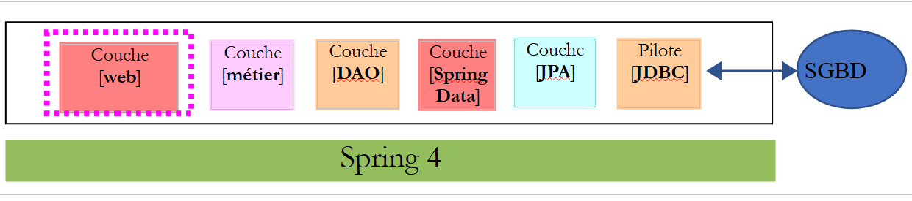
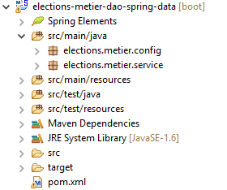
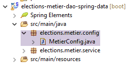
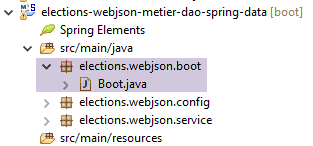
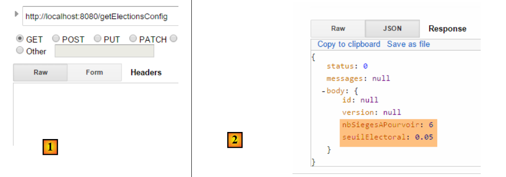
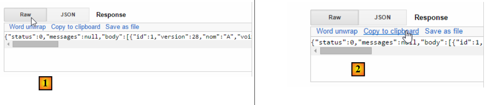
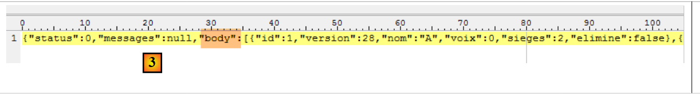
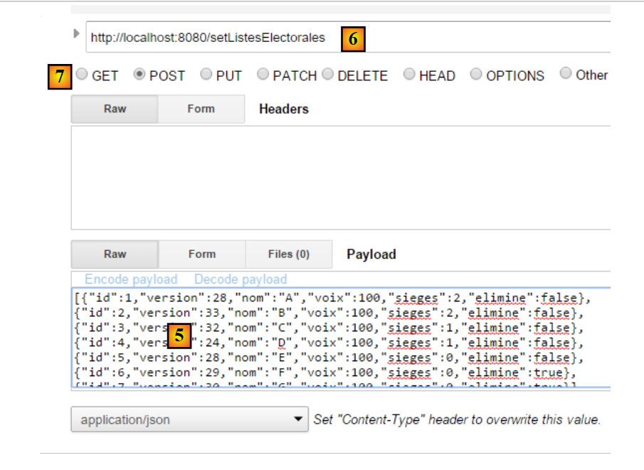
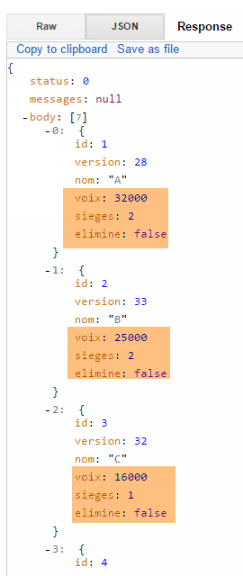

14. [TD]: Exposição web da camada [de negócios]
Palavras-chave: arquitetura multicamadas, Spring, injeção de dependências, serviço web / JSON, cliente / servidor.
Voltemos à arquitetura atual da aplicação TD:
 |
Vamos evoluir esta arquitetura para o seguinte:
 |
para expor a interface [IMetier] da camada de negócios na Web. Para tal, seguiremos a metodologia descrita na secção 13.5.
14.1. Suporte
 |
Os projetos para este capítulo podem ser encontrados na pasta [support / chap-14].
14.2. O projeto Eclipse para a camada [business]
 |
 |
14.2.1. Configuração do Maven
O projeto da camada [business] é um projeto Maven configurado pelo seguinte ficheiro [pom.xml]:
<?xml version="1.0" encoding="UTF-8"?>
<project xmlns="http://maven.apache.org/POM/4.0.0"
xsi:schemaLocation="http://maven.apache.org/POM/4.0.0 http://maven.apache.org/maven-v4_0_0.xsd"
xmlns:xsi="http://www.w3.org/2001/XMLSchema-instance">
<modelVersion>4.0.0</modelVersion>
<groupId>istia.st.elections</groupId>
<artifactId>elections-metier-dao-spring-data</artifactId>
<version>0.1.0</version>
<!-- dependencies -->
<parent>
<groupId>org.springframework.boot</groupId>
<artifactId>spring-boot-starter-parent</artifactId>
<version>1.2.7.RELEASE</version>
</parent>
<dependencies>
<!-- layer [DAO] -->
<dependency>
<groupId>istia.st.elections</groupId>
<artifactId>elections-dao-spring-data-01</artifactId>
<version>0.0.1-SNAPSHOT</version>
</dependency>
<!-- Spring Boot -->
<dependency>
<groupId>org.springframework.boot</groupId>
<artifactId>spring-boot</artifactId>
<scope>test</scope>
</dependency>
<!-- Spring Boot Test -->
<dependency>
<groupId>org.springframework.boot</groupId>
<artifactId>spring-boot-starter-test</artifactId>
<scope>test</scope>
</dependency>
</dependencies>
<properties>
<!-- use UTF-8 for everything -->
<project.build.sourceEncoding>UTF-8</project.build.sourceEncoding>
<java.version>1.8</java.version>
</properties>
<build>
<plugins>
<plugin>
<groupId>org.apache.maven.plugins</groupId>
<artifactId>maven-surefire-plugin</artifactId>
<version>2.18.1</version>
</plugin>
</plugins>
</build>
</project>
- linhas 18–22: a dependência da camada [DAO] criada no parágrafo 12;
- linhas 23–34: as dependências necessárias para os testes;
14.2.2. Configuração do Spring
 |
O projeto da camada [business] é um projeto Spring configurado pelo seguinte ficheiro [MetierConfig]:
package elections.metier.config;
import org.springframework.context.annotation.ComponentScan;
import org.springframework.context.annotation.Import;
import elections.dao.config.DaoConfig;
@Import({ DaoConfig.class })
@ComponentScan({ "elections.metier.service" })
public class MetierConfig {
}
- Não utilizamos aqui a anotação [@Configuration], o que tornaria a classe numa classe de configuração Spring. A presença das anotações [@Import] e [@ComponentScan] torna-a automaticamente numa classe de configuração;
- Linha 8: Importamos o ficheiro de configuração da camada [DAO]. Passamos então a ter acesso a todos os beans definidos por este ficheiro;
- Linha 9: Outros beans Spring encontram-se na pasta [elections.metier.service];
14.2.3. Implementação da camada [business]
 |
A implementação da camada [de negócios] é a definida na Secção 8.5.
14.2.4. Testar a camada [de negócios]
 |
A classe de teste é a descrita na Secção 8.6.
Tarefa: Implementar o projeto da camada [de negócios] e passar no seu teste unitário. Gerar o arquivo da camada no repositório Maven local (Executar como / Maven / Instalar).
14.3. O projeto Eclipse para a camada [web]
 |
A camada web é uma camada Spring MVC:
 |
O projeto Eclipse tem a seguinte estrutura:
 |  |
- [Boot.java] é a classe que inicia o serviço web;
- [WebConfig.java] é a classe de configuração do serviço web;
- [Response.java] é a resposta gerada pelos vários URLs do serviço web;
- [ElectionsController] é a classe de implementação do serviço web;
14.4. Configuração do Maven
O projeto é um projeto Maven configurado pelo seguinte ficheiro [pom.xml]:
<project xmlns="http://maven.apache.org/POM/4.0.0" xmlns:xsi="http://www.w3.org/2001/XMLSchema-instance"
xsi:schemaLocation="http://maven.apache.org/POM/4.0.0 http://maven.apache.org/xsd/maven-4.0.0.xsd">
<modelVersion>4.0.0</modelVersion>
<groupId>istia.st.elections</groupId>
<artifactId>elections-webjson-metier-dao-spring-data</artifactId>
<version>0.0.1-SNAPSHOT</version>
<name>elections-webjson-metier-dao-spring-data</name>
<description>couche métier exposée comme un service web / jSON</description>
<parent>
<groupId>org.springframework.boot</groupId>
<artifactId>spring-boot-starter-parent</artifactId>
<version>1.2.7.RELEASE</version>
</parent>
<dependencies>
<!-- business layer -->
<dependency>
<groupId>istia.st.elections</groupId>
<artifactId>elections-metier-dao-spring-data</artifactId>
<version>0.1.0</version>
</dependency>
<!-- layer MVC -->
<dependency>
<groupId>org.springframework.boot</groupId>
<artifactId>spring-boot-starter-web</artifactId>
</dependency>
</dependencies>
<properties>
<project.build.sourceEncoding>UTF-8</project.build.sourceEncoding>
<java.version>1.8</java.version>
</properties>
<build>
<plugins>
<plugin>
<groupId>org.apache.maven.plugins</groupId>
<artifactId>maven-surefire-plugin</artifactId>
<version>2.18.1</version>
</plugin>
</plugins>
</build>
</project>
- linhas 19–23: a dependência do arquivo da camada [business]. Esta é a que criámos no parágrafo 14;
- linhas 25–28: a dependência para uma aplicação Spring MVC;
14.5. Configuração do Spring
 |
A classe [WebConfig] configura o serviço web:
package elections.webjson.config;
import org.springframework.beans.factory.annotation.Autowired;
import org.springframework.beans.factory.config.ConfigurableBeanFactory;
import org.springframework.boot.context.embedded.EmbeddedServletContainerFactory;
import org.springframework.boot.context.embedded.ServletRegistrationBean;
import org.springframework.boot.context.embedded.tomcat.TomcatEmbeddedServletContainerFactory;
import org.springframework.context.ApplicationContext;
import org.springframework.context.annotation.Bean;
import org.springframework.context.annotation.ComponentScan;
import org.springframework.context.annotation.Import;
import org.springframework.context.annotation.Scope;
import org.springframework.web.context.WebApplicationContext;
import org.springframework.web.servlet.DispatcherServlet;
import org.springframework.web.servlet.config.annotation.EnableWebMvc;
import com.fasterxml.jackson.databind.ObjectMapper;
import elections.metier.config.MetierConfig;
@EnableWebMvc
@Import({ MetierConfig.class })
@ComponentScan({ "elections.webjson.service" })
public class WebConfig {
// -------------------------------- layer configuration [web]
@Autowired
private ApplicationContext context;
@Bean
public DispatcherServlet dispatcherServlet() {
DispatcherServlet servlet = new DispatcherServlet((WebApplicationContext) context);
return servlet;
}
@Bean
public ServletRegistrationBean servletRegistrationBean(DispatcherServlet dispatcherServlet) {
return new ServletRegistrationBean(dispatcherServlet, "/*");
}
@Bean
public EmbeddedServletContainerFactory embeddedServletContainerFactory() {
return new TomcatEmbeddedServletContainerFactory("", 8080);
}
// mapper jSON
@Bean
@Scope(value = ConfigurableBeanFactory.SCOPE_PROTOTYPE)
public ObjectMapper jsonMapper() {
return new ObjectMapper();
}
}
- O significado desta configuração foi explicado na Secção 13.5.3.1. Iremos explicar apenas as novas funcionalidades:
- linha 22: importamos o ficheiro de configuração da camada [business] para utilizar todos os seus beans;
- linha 23: especificamos que outros beans serão encontrados na pasta [elections.webjson.server.service];
14.6. A classe de inicialização do serviço web
 |
A classe [Boot] inicia o serviço web da seguinte forma:
package elections.webjson.boot;
import org.springframework.boot.SpringApplication;
import elections.webjson.config.WebConfig;
public class Boot {
public static void main(String[] args) {
SpringApplication.run(WebConfig.class, args);
}
}
- Linha 10: O método estático [SpringApplication.run] utilizará o ficheiro de configuração [WebConfig]. Devido à anotação [@EnableAutoConfiguration], o Spring Boot irá iniciar o servidor Tomcat e implementar o serviço web no mesmo;
14.7. A resposta das URLs do serviço web
 |
Todas as URLs do serviço web / JSON enviam o mesmo tipo de resposta:
package elections.webjson.service;
import java.util.List;
public class Response<T> {
// ----------------- properties
// operation status
private int status;
// any error messages
private List<String> messages;
// the body of the reply
private T body;
// manufacturers
public Response() {
}
public Response(int status, List<String> messages, T body) {
this.status = status;
this.messages = messages;
this.body = body;
}
// getters and setters
...
}
Esta classe foi apresentada e discutida na Secção 13.5.5.3.
14.8. Implementação do serviço web / JSON
|
O serviço web /jSON é implementado pela seguinte classe [ElectionsController]:
package elections.webjson.service;
import java.util.ArrayList;
import java.util.List;
import javax.servlet.http.HttpServletRequest;
import org.springframework.beans.factory.annotation.Autowired;
import org.springframework.stereotype.Controller;
import org.springframework.web.bind.annotation.RequestMapping;
import org.springframework.web.bind.annotation.RequestMethod;
import org.springframework.web.bind.annotation.ResponseBody;
import com.fasterxml.jackson.core.JsonProcessingException;
import com.fasterxml.jackson.databind.ObjectMapper;
import elections.dao.entities.ElectionsConfig;
import elections.dao.entities.ElectionsException;
import elections.metier.service.IElectionsMetier;
@Controller
public class ElectionsController {
// spring dependencies
@Autowired
private ObjectMapper jsonMapper;
@Autowired
private IElectionsMetier metier;
@RequestMapping(value = "/getElectionsConfig", method = RequestMethod.GET, produces = "application/json; charset=UTF-8")
@ResponseBody
public String getElectionsConfig() throws JsonProcessingException {
// answer
Response<ElectionsConfig> response;
try {
response = new Response<>(0, null,
new ElectionsConfig(metier.getNbSiegesAPourvoir(), metier.getSeuilElectoral()));
} catch (ElectionsException e1) {
response = new Response<>(e1.getCode(), e1.getErreurs(), null);
} catch (RuntimeException e2) {
response = new Response<>(1000, getErreursForException(e2), null);
}
// answer
return jsonMapper.writeValueAsString(response);
}
@RequestMapping(value = "/getListesElectorales", method = RequestMethod.GET, produces = "application/json; charset=UTF-8")
@ResponseBody
public String getListesElectorales() throws JsonProcessingException {
throw new UnsupportedOperationException("Not supported yet");
}
@RequestMapping(value = "/setListesElectorales", method = RequestMethod.POST, consumes = "application/json; charset=UTF-8", produces = "application/json; charset=UTF-8")
@ResponseBody
public String setListesElectorales(HttpServletRequest request) throws JsonProcessingException {
throw new UnsupportedOperationException("Not supported yet");
}
@RequestMapping(value = "/calculerSieges", method = RequestMethod.POST, consumes = "application/json; charset=UTF-8", produces = "application/json; charset=UTF-8")
@ResponseBody
public String calculerSieges(HttpServletRequest request) throws JsonProcessingException {
throw new UnsupportedOperationException("Not supported yet");
}
// private methods -----------------------------
// list of RuntimeException error messages
private List<String> getErreursForException(Exception e) {
// retrieve the list of exception error messages
Throwable cause = e;
List<String> erreurs = new ArrayList<>();
while (cause != null) {
// the message is retrieved only if it is !=null and not blank
String message = cause.getMessage();
if (message != null) {
message = message.trim();
if (message.length() != 0) {
erreurs.add(message);
}
}
// next cause
cause = cause.getCause();
}
return erreurs;
}
}
Tarefa: Seguindo os passos da Secção 13.5.5, complete o código para a classe [ElectionsController].
Notas:
- Não existem filtros JSON aqui porque as tabelas [CONF] e [LISTES] não estão ligadas por uma relação de chave estrangeira, o que simplifica significativamente o código do serviço web;
- Não se esqueça das várias anotações Spring necessárias;
- Os URLs receberão nomes baseados nos métodos associados;
- O método [setListeElectorales] é chamado através de uma operação [POST]. O valor enviado é a matriz de listas concorrentes (do tipo ListeElectorale[]) com os seus atributos [lugares, votos, eliminados], que devem ser guardados na base de dados. Este método devolve uma [Response<Void>] com o campo [status=0] se não houver erros; caso contrário, devolve outro valor;
- O método [calculateSeats] é chamado com uma operação [POST]. O valor enviado é a matriz de listas concorrentes (do tipo ElectoralList[]) com os seus atributos [nome, votos]. Este método retorna um [Response<ElectoralList[]>] com, como corpo, as listas eleitorais com os seus campos [lugares, eliminados] inicializados;
14.9. Testes
Após iniciar o serviço web, execute os seguintes testes para garantir que o serviço web está a funcionar corretamente utilizando o utilitário [Advanced Rest Client]:
 |
A resposta JSON ao pedido anterior é a seguinte [1]:
 |
1  | 2  |
Em [2], copie a resposta para a área de transferência e, em seguida, cole-a em qualquer editor de texto [3]:
 |
Isole o valor do campo [body] e altere, por exemplo, os votos das listas. Abaixo [4], definimos os votos de todas as listas como 100:
 |
Verifique se a sua cadeia JSON começa com [ e termina com ]. Estes caracteres são utilizados para delimitar uma matriz JSON. Em [5], cole a cadeia JSON acima. Este será o valor enviado para o URL seguinte. Para tal, selecione o método HTTP [POST] [7].
 |
- Em [6], solicite a URL [setListesElectorales]. Esta URL é solicitada através de um pedido POST. O valor enviado é a matriz JSON das listas concorrentes, cujos resultados devem ser guardados na base de dados;
O resultado obtido é o seguinte:
 |
O campo [status=0] indica que não ocorreram erros. Para verificar isso, solicite novamente as listas concorrentes e verifique se as alterações que efetuou nas listas foram aplicadas:
 |
Fazemos outra solicitação [POST] para calcular os lugares conquistados pelas listas:
 |
- em [1]: o URL para calcular os lugares;
- em [2]: enviamos um pedido [POST];
- em [3]: as listas concorrentes. Definimos o campo [votes] com os valores do tutorial, todos os [seats] são definidos como 0 e todos os campos [eliminate] são definidos como false;
O resultado obtido é o seguinte:
 |